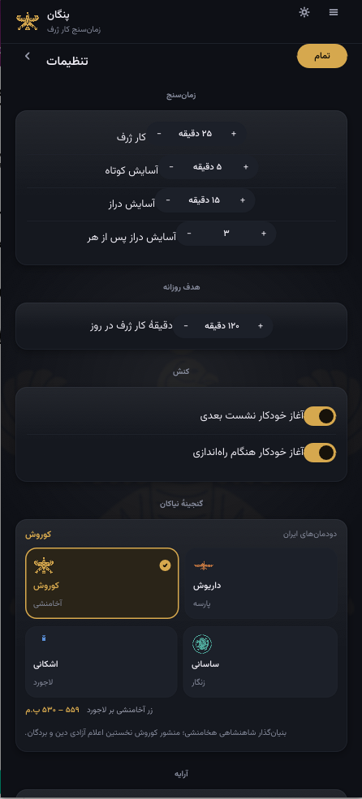

A palette for every user
Pangan lets you choose how the whole app feels. Eight distinct eras — four rooted in Iranian heritage, four modern — each with a hand-tuned dark and light variant that keeps every control readable and every emblem crisp.
Cyrus
Golden falcon standard on warm dusk. The classic Pangan look.
Darius
Faravahar emblem, deep lapis and ivory bronze.
Parthian
Imperial standard in royal purple and silver.
Sasanid
Senmurv roundel in verdigris green.
Rose
A warm rose on deep ink — soft and serene.
Teal
Persian teal and pale jade, calm and cool.
Violet
Amethyst tones for a regal, focused mood.
Olive
Earthy olive, sienna, and bone — grounded.
Every theme is available in light and dark, and each is tuned so text clears WCAG contrast requirements on both. No theme changes the data, the timer, or the layout — only the palette and the emblem.
Authentic heritage emblems
The four heritage eras draw on authentic pre-Islamic Iranian artwork, converted to tintable masks: the Shahbaz Achaemenid falcon of Cyrus, the Faravahar winged disc of Darius, the Derafsh Kaviani imperial standard of the Parthians, and the Senmurv simurgh of the Sasanians.

Make it yours
Download Pangan and switch themes any time — from the Appearance settings.